Home / Past papers / MLP Quiz 2 / this paper
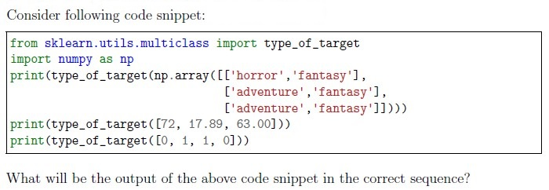
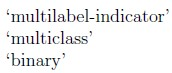
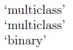
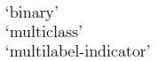
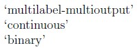
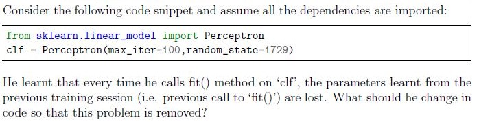
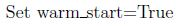
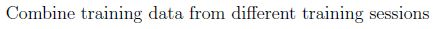
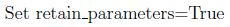
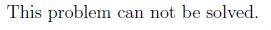
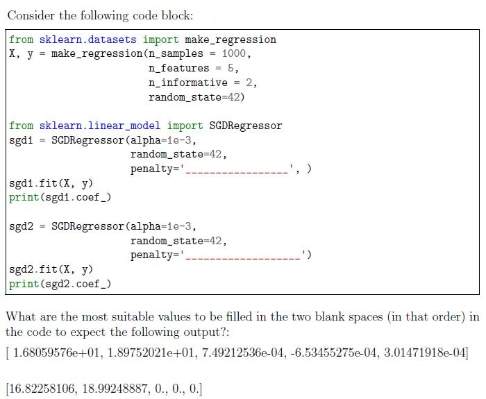
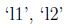
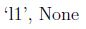
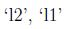
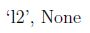
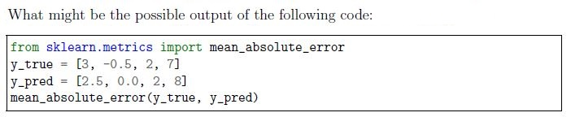
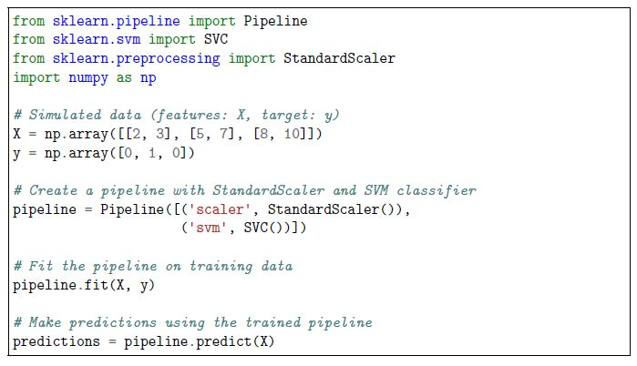
You’re building a machine learning pipeline to preprocess data and train a model on a classification task. You decide to use a pipeline that includes data preprocessing and a support vector machine (SVM) classifier. The following code snippet demonstrates the pipeline creation and usage: What is the purpose of using the pipeline in this code snippet?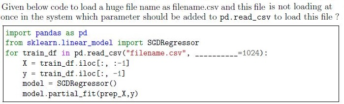
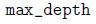
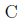
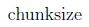
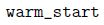
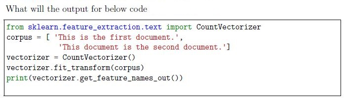
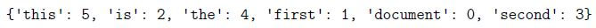
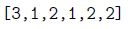
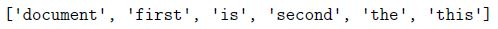
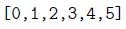
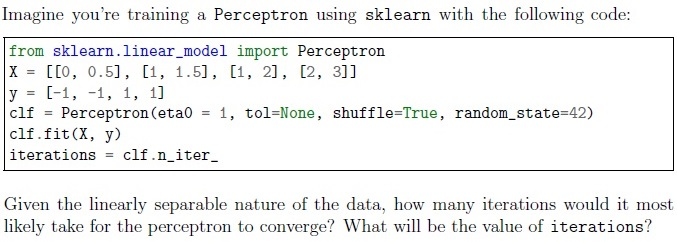
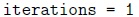
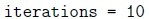
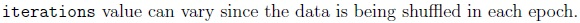
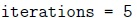
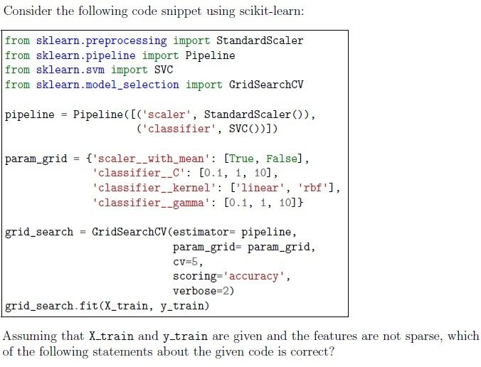
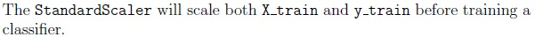
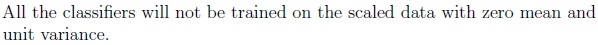
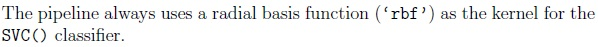
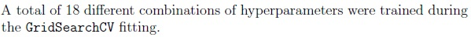
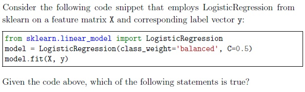
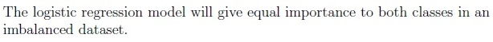
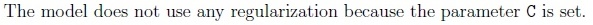
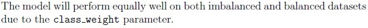
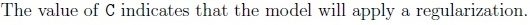
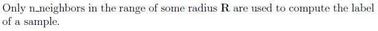
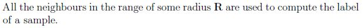
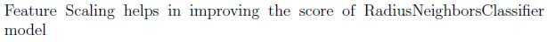
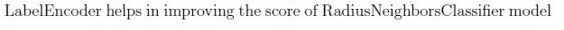
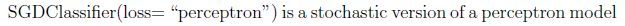
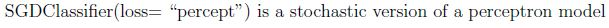
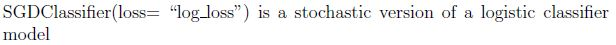
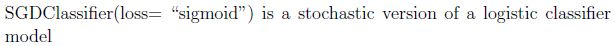